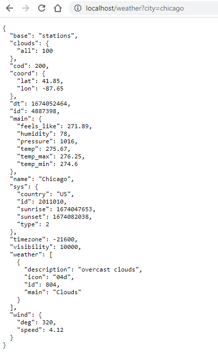

Build and deploy
We will build, deploy and scale using the docker-compose command
docker-compose up --build --scale master=2
This will tell docker-compose to :
- Read the docker-compose.yml file
- Build all the container images
- Run all the containers in detached mode
- Scale the
masterimage to 2 instances
Start all containers
PS C:\Users\aniru\workspace\github\python-nginx-microservice> docker compose up
[+] Running 5/5
- Network python-nginx-microservice_default Created 1.1s
- Container python-nginx-microservice-news-1 Created 0.8s
- Container python-nginx-microservice-master-1 Created 0.8s
- Container python-nginx-microservice-weather-1 Created 0.8s
- Container nginx Created 0.2s
Attaching to nginx, python-nginx-microservice-master-1, python-nginx-microservice-news-1, python-nginx-microservice-weather-1
We can now test if the containers are running.
PS C:\Users\aniru\workspace\github\python-nginx-microservice> docker compose ps
NAME COMMAND SERVICE STATUS PORTS
nginx "/docker-entrypoint.…" nginx running 0.0.0.0:80->80/tcp
python-nginx-microservice-master-1 "python master_assis…" master running 3001/tcp
python-nginx-microservice-master-2 "python master_assis…" master running 3001/tcp
python-nginx-microservice-news-1 "python news.py" news running 0.0.0.0:3003->3003/tcp
python-nginx-microservice-weather-1 "python weather.py" weather running 0.0.0.0:3002->3002/tcp
As you can see, this indicates :
- nginx service is running as
nginxon port:80 - master service is running as
python-nginx-microservice-master-1andpython-nginx-microservice-master-1on internal port:3001 - news service is running as
python-nginx-microservice-news-1on port:3002 - weather service is running as
python-nginx-microservice-weather-1on port:3003
Test the application
Now we will test the application by invoking 3 URLs:
-
Index page : In this case the following code is executed in the master service

-
News page : We will now query all news for the day in US
http://localhost/news?country=us
Let's check the logs by using command docker logs <container-name> -f
PS C:\Users\aniru\workspace\github\python-nginx-microservice> docker logs python-nginx-microservice-news-1 -f
* Serving Flask app "news" (lazy loading)
* Environment: production
WARNING: This is a development server. Do not use it in a production deployment.
Use a production WSGI server instead.
* Debug mode: on
* Running on http://0.0.0.0:3003/ (Press CTRL+C to quit)
* Restarting with stat
* Debugger is active!
* Debugger PIN: 329-461-268
172.28.0.3 - - [18/Jan/2023 20:22:42] "GET /news?country=de HTTP/1.1" 200 -
172.28.0.3 - - [18/Jan/2023 20:55:28] "GET /news?country=us HTTP/1.1" 200 -

- Weather page :
http://localhost/weather?city=chicago
Let's check the logs by using command docker logs <container-name> -f
PS C:\Users\aniru\workspace\github\python-nginx-microservice> docker logs python-nginx-microservice-weather-1 -f
* Serving Flask app "weather" (lazy loading)
* Environment: production
WARNING: This is a development server. Do not use it in a production deployment.
Use a production WSGI server instead.
* Debug mode: on
* Running on http://0.0.0.0:3002/ (Press CTRL+C to quit)
* Restarting with stat
* Debugger is active!
* Debugger PIN: 858-141-160
172.28.0.2 - - [18/Jan/2023 20:22:45] "GET /weather?city=amsterdam HTTP/1.1" 200 -
172.28.0.2 - - [18/Jan/2023 20:59:38] "GET /weather?city=amsterdam HTTP/1.1" 200 -

Test the load-balancer
Open two separate terminals and run:
docker logs python-nginx-microservice-master-1 -f
docker logs python-nginx-microservice-master-2 -f
Now invoke these URLs in random while observing the logs: